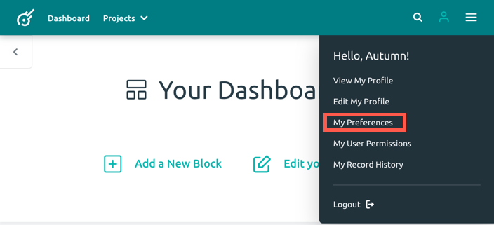
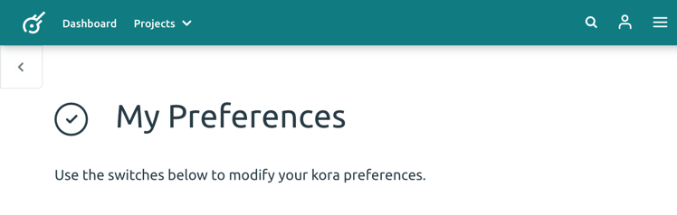
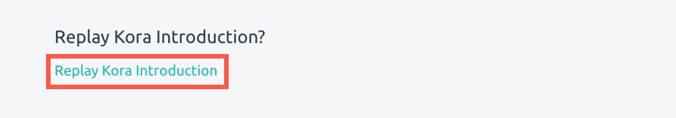
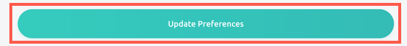
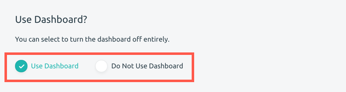
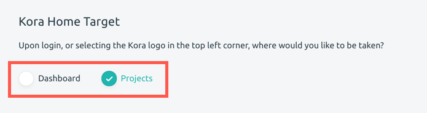
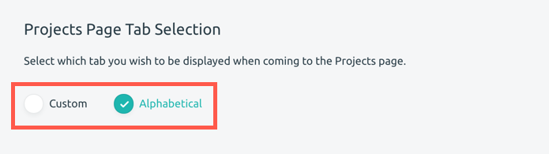
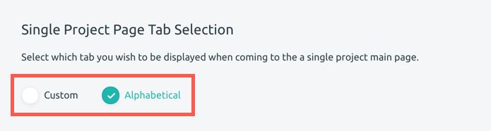

Edit User Preferences
You can edit your kora preferences to modifiy your user experience including the use of the dashboard and organization of projects.
Follow the steps below to edit your user preferences.
-
When you are logged into Kora, you can access your user preferences from anywhere. Click on the person icon in the top menu located in the top right corner of the page.

-
This will open a dropdown menu. Choose the My Preferences option.

-
On the My Preferences page, you are able to modify your kora preferences. There are four different preferences you can modify.
- Use Dashboard
- Kora Home Target
- Projects Tab Selection
- Single Project Tab Selection
You can view more information about each of these preferences below.

-
You also have the option to reply the Kora Introduction, by pressing the *Replay Kora Introduction option at the bottom of the page.

-
When you have finished making changes to your kora user preferences, click the *Update Preferences blue button at the bottom of the page to save the changes.

Use Dashboard
This option allows you to choose whether you would like to use the dashboard or to turn off the dashboard entirely. Click the circle next to the option you would like to select, this will change the color of the circle and text to blue and add a white checkmark within the circle.

Kora Home Target
Upon login, or when you select the kora logo in the top left corner, you can either be taken to the dashboard or your projects list. Click the circle next to the option you would like to select, this will change the color of the circle and text to blue and add a white checkmark within the circle.

Projects Tab Selection
When you view your list of projects, you can chose to have them displayed alphabetically or in a custom order. Click the circle next to the option you would like to select, this will change the color of the circle and text to blue and add a white checkmark within the circle.

Single Project Tab Selection
When you view an individual project, you can chose to have the forms within that project displayed alphabetically or in a custom order. Click the circle next to the option you would like to select, this will change the color of the circle and text to blue and add a white checkmark within the circle.
